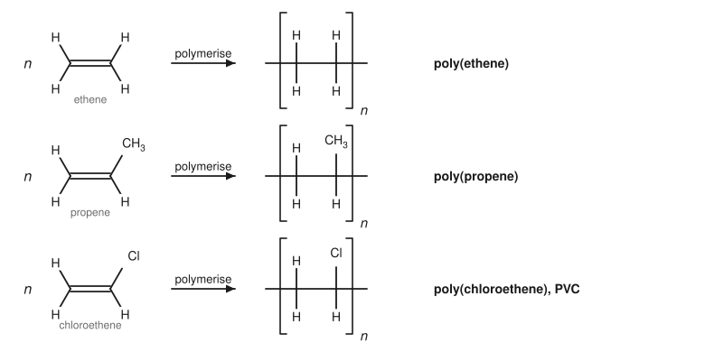
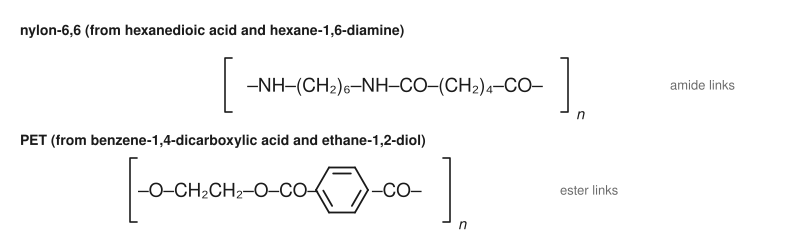
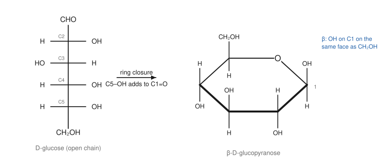
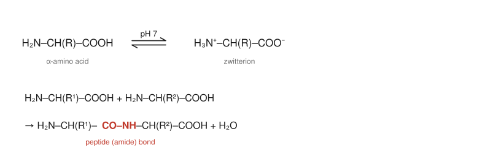

Chapter 15: Polymers and Biomolecules¶
Large molecules made from small ones, by chemists and by living things
Many of the most important organic substances are enormous molecules built by joining small units again and again. Some are made in factories: poly(ethene) bags, nylon rope, polyester fabric. Others are made by living cells: starch and cellulose from sugars, proteins from amino acids, DNA from nucleotides. Both kinds are built using the reactions of earlier chapters, chiefly additions to alkenes and the formation of esters, amides and acetals. This chapter describes how synthetic polymers are made and how their structures decide their properties, and then introduces three families of biomolecules: carbohydrates, amino acids and proteins, and lipids, with a brief look at nucleic acids.
Learning outcomes
By the end of this chapter you should be able to:
- distinguish addition and condensation polymerisation, and draw the repeat unit of a polymer from its monomer(s) and the reverse;
- write the radical chain mechanism of addition polymerisation;
- relate the properties of polymers to their structure, and discuss their environmental impact;
- describe the structures of monosaccharides, including the cyclic forms of glucose and its α and β anomers, and of disaccharides and polysaccharides;
- describe amino acids as zwitterions, explain the isoelectric point, form peptide bonds and outline the levels of protein structure;
- describe the structure of fats, oils and phospholipids, and explain how soaps and cell membranes work;
- outline the structure of nucleic acids.
15.1 Polymers: the basic ideas¶
A polymer (from the Greek for "many parts") is a very large molecule, a macromolecule, made of many repeating units called monomers joined by covalent bonds. A typical synthetic polymer molecule contains thousands of monomer units and has a molar mass of tens or hundreds of thousands of grams per mole. In a sample, the chains are not all the same length, so polymers are described by an average molar mass.
Polymers are made in two main ways:
- Addition polymerisation (chain-growth): monomers with a C=C double bond add to the end of a growing chain one at a time, and nothing is lost; the polymer has the same empirical formula as the monomer.
- Condensation polymerisation (step-growth): monomers with two functional groups each react to form ester or amide links, and a small molecule (usually water) is lost at each link.
15.2 Addition polymers¶
Ethene, propene, chloroethene, phenylethene and other alkenes polymerise under suitable conditions. The double bond of each monomer opens, and the monomers link into a long saturated chain. The polymer is written as its repeat unit in square brackets with a subscript n:

| Monomer | Polymer | Repeat unit | Typical uses |
|---|---|---|---|
| ethene, CH₂=CH₂ | poly(ethene), polyethylene | –CH₂–CH₂– | bags, films, bottles, pipes |
| propene, CH₂=CHCH₃ | poly(propene), polypropylene | –CH₂–CH(CH₃)– | containers, ropes, carpets |
| chloroethene, CH₂=CHCl | poly(chloroethene), PVC | –CH₂–CHCl– | window frames, pipes, cable insulation |
| phenylethene, CH₂=CHC₆H₅ | poly(phenylethene), polystyrene | –CH₂–CH(C₆H₅)– | packaging, insulation, disposable cups |
| tetrafluoroethene, CF₂=CF₂ | poly(tetrafluoroethene), PTFE | –CF₂–CF₂– | non-stick coatings, seals |
| methyl 2-methylpropenoate | poly(methyl methacrylate), PMMA | –CH₂–C(CH₃)(COOCH₃)– | shatter-resistant transparent sheets |
Table 15.1. Common addition polymers.
To find the monomer from a polymer, identify the two-carbon repeat unit in the main chain and put a double bond between those two carbons.
The mechanism: radical chain polymerisation¶
Many addition polymers are made by a radical chain mechanism, with the same three stages as radical halogenation (Section 6.6):
- Initiation. An initiator, such as a peroxide (R–O–O–R), splits on heating into two radicals, RO•. A radical adds to the C=C bond of a monomer, using one π electron of the monomer and forming a new radical on the other carbon: RO• + CH₂=CH₂ → RO–CH₂–CH₂•.
- Propagation. The new radical adds to another monomer, and the chain grows by one unit at a time, thousands of times: RO–CH₂CH₂• + CH₂=CH₂ → RO–CH₂CH₂CH₂CH₂•, and so on.
- Termination. Two growing chains meet and their radicals combine (or one takes a hydrogen atom from the other), ending both chains.
With unsymmetrical monomers such as propene, the radical adds to the CH₂ end so that the new radical is on the more substituted carbon (more stable), which gives a regular "head-to-tail" chain with the substituents on alternate carbons. Poly(ethene) made by radical polymerisation at high pressure has many side branches, which prevent the chains packing closely: this is low-density poly(ethene) (LDPE), soft and flexible. Using metal catalysts (Ziegler–Natta catalysts) at low pressure gives unbranched chains that pack well: high-density poly(ethene) (HDPE), stiffer and stronger. Ziegler–Natta catalysts also control the stereochemistry of poly(propene), placing all the methyl groups on the same side of the chain, which gives a stronger, more crystalline material.
15.3 Condensation polymers¶
Condensation polymers are made from monomers that each carry two functional groups, so that every reaction leaves a group free at each end for the next step.
Polyesters form from a dicarboxylic acid (or its derivative) and a diol. Poly(ethylene terephthalate), PET, is made from benzene-1,4-dicarboxylic acid (terephthalic acid) and ethane-1,2-diol. It is used for drinks bottles and, as polyester fibre, for clothing.
Polyamides form from a dicarboxylic acid (or acyl chloride) and a diamine. Nylon-6,6 is made from hexanedioic acid and hexane-1,6-diamine; the numbers give the carbons in each monomer. The amide groups of neighbouring chains hydrogen bond to one another, making nylon strong. Kevlar, an aromatic polyamide made from benzene-1,4-dicarboxylic acid and benzene-1,4-diamine, has rigid chains held in sheets by hydrogen bonds; it is strong enough to be used in protective clothing.

Example 15.1: Monomers from a repeat unit
Give the monomers of the polymer whose repeat unit is –O–CH₂CH₂CH₂–O–CO–(CH₂)₂–CO–.
The repeat unit contains two ester links. Break each ester link between the C=O carbon and the oxygen, adding OH to the acyl carbon and H to the oxygen. The monomers are propane-1,3-diol, HOCH₂CH₂CH₂OH, and butanedioic acid, HOOC–CH₂CH₂–COOH.
Structure and properties¶
The properties of a polymer depend on the length of its chains, the forces between them and how regularly they pack:
- Thermoplastics (poly(ethene), PVC, PET, nylon) consist of separate chains held together by intermolecular forces. They soften on heating and can be moulded and remoulded.
- Thermosets (epoxy resins, melamine resins, vulcanised rubber) have chains linked to one another by covalent cross-links into a network. They do not soften on heating, but char or decompose.
- Regular chains pack into ordered, crystalline regions, giving stiffer, stronger, more opaque materials; irregular, branched chains give softer, amorphous materials.
- Stronger forces between chains (hydrogen bonds in nylon, dipole–dipole forces in PVC) give stronger, higher-melting materials than dispersion forces alone (poly(ethene)).
Polymers and the environment¶
Most addition polymers have backbones of C–C bonds, which microorganisms cannot break down easily, so plastic waste persists in the environment for a very long time. Possible responses include reduction and reuse; mechanical recycling, in which sorted plastics are melted and reformed; chemical recycling, in which polymers such as PET are broken back down into monomers by hydrolysis or other reactions; incineration with energy recovery, which releases carbon dioxide; and biodegradable polymers. Condensation polymers with ester links in the chain can be hydrolysed, and poly(lactic acid), PLA, a polyester made from lactic acid obtained by fermenting plant sugars, can be composted under industrial conditions. These issues are part of green chemistry (Chapter 16).
15.4 Carbohydrates¶
Carbohydrates (sugars and their polymers) have formulas that can often be written Cₙ(H₂O)ₘ, hence the name "hydrates of carbon". Plants make them from carbon dioxide and water by photosynthesis, and they are the main fuel and an important structural material of living things.
Monosaccharides¶
Monosaccharides are polyhydroxy aldehydes (aldoses) or polyhydroxy ketones (ketoses), usually with five or six carbons. Glucose, C₆H₁₂O₆, is an aldohexose (six carbons, an aldehyde group); fructose, its isomer, is a ketohexose.
Glucose has four stereocentres (C2 to C5), so there are sixteen aldohexoses; glucose is one of them. Sugars are drawn as Fischer projections (Section 3.6), with the CHO at the top. In natural sugars, the OH on the stereocentre furthest from the carbonyl group (C5 in glucose) points to the right in the Fischer projection: these are D-sugars. Almost all natural sugars belong to the D series. (The D and L labels refer to this relationship with glyceraldehyde and are not the same thing as R and S or + and −.)
Cyclic forms¶
In solution, glucose exists almost entirely as six-membered rings. The OH group on C5 adds to the C1 aldehyde to form a cyclic hemiacetal (Section 11.4). The ring contains five carbons and one oxygen, and is called a pyranose. The ring closure makes C1 a new stereocentre, called the anomeric carbon, and two forms, the anomers, are possible:
- α-D-glucopyranose: the OH on C1 is on the opposite face of the ring to the CH₂OH group (down, in the usual Haworth drawing).
- β-D-glucopyranose: the OH on C1 is on the same face as the CH₂OH group (up).

In water, the two anomers interconvert through the open-chain form, which is present only in a tiny amount. A solution of either pure anomer slowly changes its optical rotation until it reaches an equilibrium mixture of about one-third α and two-thirds β; this change is called mutarotation. The β anomer predominates because in its chair conformation all the substituents, including the C1 OH, are equatorial (Section 6.5).
Because the open-chain form, with its aldehyde group, is always present in equilibrium, glucose gives positive Benedict's and Tollens' tests (Section 11.6); it is a reducing sugar.
Disaccharides and polysaccharides¶
The anomeric OH of one monosaccharide can react with an OH of another to form an acetal link, called a glycosidic bond, with loss of water.
- Maltose consists of two glucose units joined by an α(1→4) glycosidic bond (from C1 of one, in the α configuration, to the O on C4 of the other). It is a reducing sugar, because the second glucose still has a free hemiacetal.
- Lactose, milk sugar, links galactose and glucose by a β(1→4) bond.
- Sucrose, ordinary table sugar, links glucose and fructose through both their anomeric carbons. It has no free hemiacetal and is not a reducing sugar.
Polysaccharides are polymers of monosaccharides:
- Starch, the main energy store of plants, is a mixture of amylose (unbranched chains of glucose joined by α(1→4) links, which coil into helices) and amylopectin (the same chains with branches joined by α(1→6) links). Glycogen, the energy store of animals, resembles amylopectin but is more highly branched.
- Cellulose, the main structural material of plants, consists of unbranched chains of glucose joined by β(1→4) links. The β links give straight chains that lie side by side and hydrogen bond into strong fibres. Humans have enzymes that hydrolyse α links but not β links, so we can digest starch but not cellulose; grazing animals rely on microorganisms in their gut to do it.
Key idea
Starch and cellulose are both polymers of glucose. The only difference is the configuration at the anomeric carbon (α in starch, β in cellulose), yet it changes the shape of the chains, the properties of the material and whether we can digest it.
15.5 Amino acids and proteins¶
Amino acids¶
The building blocks of proteins are α-amino acids, H₂N–CH(R)–COOH, in which an amino group and a carboxyl group are attached to the same carbon (the α-carbon). Twenty different amino acids, differing in their side chain R, are coded for by genes. The simplest, glycine, has R = H; others have alkyl side chains (alanine, valine, leucine), side chains with OH (serine), SH (cysteine), aromatic rings (phenylalanine, tyrosine), acidic groups (aspartic acid, glutamic acid) or basic groups (lysine, arginine).
Except for glycine, the α-carbon is a stereocentre. Almost all amino acids in proteins have the same configuration, called L, which corresponds to S for all of them except cysteine, whose sulfur atom changes the CIP priorities and makes the L form R.
Zwitterions and the isoelectric point¶
An amino acid contains both an acidic group (COOH, pKa about 2) and a basic group (NH₂, pKa of the conjugate acid about 9 to 10). Near neutral pH, the carboxyl group is ionised and the amino group protonated, so the amino acid exists as a zwitterion, ⁺H₃N–CH(R)–COO⁻ (Example 4.3). This explains why amino acids are crystalline solids with high melting points (they decompose rather than melt) and are more soluble in water than in organic solvents.
The form present depends on pH. In strong acid, both groups are protonated (overall charge +1); in strong base, both are deprotonated (overall charge −1). The pH at which the amino acid carries no net charge is its isoelectric point, pI. For an amino acid with a neutral side chain it lies about halfway between the two pKa values (about 6 for glycine and alanine). At its pI an amino acid does not move in an electric field, which is the basis of separation by electrophoresis.
The peptide bond¶
The carboxyl group of one amino acid can form an amide with the amino group of another, with loss of water. This amide link is the peptide bond. Two amino acids give a dipeptide, several a peptide, and long chains (usually more than about fifty amino acids) a protein. The peptide bond is planar and rigid because of amide resonance (Section 12.6), which strongly influences how protein chains fold.

Levels of protein structure¶
- Primary structure: the sequence of amino acids in the chain, written from the N-terminus (free NH₂) to the C-terminus (free COOH).
- Secondary structure: regular local folding held by hydrogen bonds between the C=O and N–H groups of the backbone: the α-helix (a coil with hydrogen bonds between turns) and the β-pleated sheet (strands lying side by side).
- Tertiary structure: the overall three-dimensional shape of a chain, held by interactions between side chains: hydrogen bonds, ionic attractions, hydrophobic interactions and covalent disulfide bridges (–S–S–) between cysteine residues.
- Quaternary structure: the arrangement of several chains in a protein made of more than one, such as haemoglobin, with four chains.
The function of a protein depends on its shape. Enzymes, proteins that catalyse reactions, have active sites shaped to bind particular substrates, often distinguishing between enantiomers (Section 3.5). Heat, extremes of pH and some chemicals disrupt the weak interactions that hold the shape, denaturing the protein and destroying its activity, as when an egg is cooked. Strong acid or base, with heat, hydrolyses the peptide bonds themselves, breaking the protein down into its amino acids.
15.6 Lipids¶
Lipids are the compounds of living things that dissolve in non-polar solvents but not in water. They are a varied group, defined by solubility rather than by structure.
Fats and oils¶
Fats and oils are triglycerides (triacylglycerols): esters of propane-1,2,3-triol (glycerol) with three long-chain fatty acids, usually with even numbers of carbons, typically 12 to 20.
- Saturated fatty acids, such as hexadecanoic (palmitic) acid and octadecanoic (stearic) acid, have straight, flexible chains that pack closely. Triglycerides rich in them are solid at room temperature: fats, mostly from animals.
- Unsaturated fatty acids, such as oleic acid (cis-octadec-9-enoic acid), contain one or more C=C bonds, usually cis. Each cis double bond puts a kink in the chain, which stops the molecules packing well and lowers the melting point. Triglycerides rich in them are liquid: oils, mostly from plants and fish.
Hydrogenating some of the double bonds of an oil (Section 7.6) raises its melting point, which is how vegetable oils were traditionally turned into spreads. Saponification of triglycerides with sodium hydroxide gives glycerol and soap (Section 12.5).
Phospholipids and membranes¶
In a phospholipid, one fatty acid of a triglyceride is replaced by a phosphate group linked to a small polar or charged molecule. The molecule has a polar, water-loving (hydrophilic) head and two non-polar, water-avoiding (hydrophobic) tails. In water, phospholipids arrange themselves spontaneously into a double layer, a lipid bilayer, with the tails inside and the heads facing the water on both sides. Lipid bilayers form the membranes of all cells, a barrier that keeps the contents of the cell in and most ions and polar molecules out.
Steroids¶
Steroids are lipids with a characteristic skeleton of four fused rings (three six-membered and one five-membered). Cholesterol is a component of animal cell membranes and the starting material from which the body makes other steroids, including the sex hormones (testosterone, oestradiol), the corticosteroids and vitamin D.
15.7 Nucleic acids in brief¶
DNA (deoxyribonucleic acid) and RNA (ribonucleic acid) store and transmit genetic information. They are condensation polymers of nucleotides. Each nucleotide contains a five-carbon sugar (deoxyribose in DNA, ribose in RNA), a phosphate group and a nitrogen-containing heterocyclic base. The sugars and phosphates alternate along the backbone, joined by phosphate ester links, and a base hangs from each sugar.
DNA contains four bases: adenine (A), guanine (G), cytosine (C) and thymine (T). Two DNA strands wind around each other in a double helix, held together by hydrogen bonds between bases on opposite strands: A pairs with T (two hydrogen bonds) and G with C (three hydrogen bonds). This complementary base pairing, which depends on the shapes and hydrogen-bonding groups of the bases, allows each strand to serve as a template for copying the other. In RNA, uracil (U) replaces thymine.
15.8 Summary¶
Summary
- Polymers are macromolecules of repeating units. Addition polymers form from alkenes with nothing lost; condensation polymers form from bifunctional monomers with loss of a small molecule.
- Radical addition polymerisation has initiation, propagation and termination steps. Chain structure (branching, regularity, cross-linking, intermolecular forces) decides properties.
- Polyesters (PET) and polyamides (nylon, Kevlar) contain ester and amide links; they can be hydrolysed. Plastic waste is a major environmental problem.
- Glucose is an aldohexose; in solution it forms cyclic hemiacetals (α and β anomers) that interconvert by mutarotation. Glycosidic (acetal) links join sugars into disaccharides and polysaccharides; starch has α links, cellulose β links.
- α-Amino acids exist as zwitterions near pH 7 and have an isoelectric point. Peptide (amide) bonds join them into proteins, whose primary, secondary, tertiary and quaternary structures determine their function.
- Triglycerides are esters of glycerol and fatty acids; cis double bonds lower melting points. Phospholipids form membranes. Steroids have four fused rings.
- DNA and RNA are polymers of nucleotides; base pairing (A–T, G–C) by hydrogen bonds holds the double helix together.
15.9 Exercises¶
Exercise 1
Draw the repeat unit of the polymer formed from (a) phenylethene; (b) propenenitrile, CH₂=CHCN. Give the monomer of the polymer –CH₂–C(CH₃)₂–CH₂–C(CH₃)₂–.
Answer
(a) –CH₂–CH(C₆H₅)–, poly(phenylethene) (polystyrene). (b) –CH₂–CH(CN)–, poly(propenenitrile), used for acrylic fibres. The repeat unit of the last polymer is –CH₂–C(CH₃)₂–, so the monomer is 2-methylpropene, CH₂=C(CH₃)₂.
Exercise 2
Write the initiation, two propagation steps and one termination step for the radical polymerisation of chloroethene initiated by a peroxide RO–OR.
Answer
Initiation: RO–OR → 2 RO• (heat); RO• + CH₂=CHCl → RO–CH₂–C•HCl (the radical forms on the carbon carrying Cl, the more stabilised position). Propagation: RO–CH₂–C•HCl + CH₂=CHCl → RO–CH₂–CHCl–CH₂–C•HCl; the chain then adds further monomers in the same way. Termination: two chain radicals combine, R′–C•HCl + •CHCl–R″ → R′–CHCl–CHCl–R″.
Exercise 3
Explain why nylon-6,6 has a higher melting point than poly(ethene) of similar chain length, and why a PET bottle can, in principle, be broken down into its monomers while a poly(ethene) bag cannot easily be.
Answer
Nylon chains are linked to one another by hydrogen bonds between the N–H of one amide group and the C=O of another, much stronger than the dispersion forces that hold poly(ethene) chains together. PET has ester links in its backbone, which can be hydrolysed (by acid, base or enzymes) back to the diacid and the diol. Poly(ethene) has only C–C and C–H bonds, which have no such reactive site.
Exercise 4
(a) Is glucose a reducing sugar? Is sucrose? Explain. (b) Explain what is meant by mutarotation.
Answer
(a) Glucose is reducing: its cyclic hemiacetal is in equilibrium with the open-chain aldehyde, which reduces Benedict's and Tollens' reagents. Sucrose is not: its glucose and fructose units are joined through both anomeric carbons, so neither has a free hemiacetal that can open to a carbonyl group.
(b) Pure α- or β-D-glucopyranose, dissolved in water, slowly interconverts with the other anomer through the open-chain form. The optical rotation of the solution changes until it reaches the value of the equilibrium mixture (about one-third α, two-thirds β). This change in rotation is mutarotation.
Exercise 5
Both starch and cellulose are polymers of glucose. Explain why cellulose forms strong fibres and is indigestible by humans, while starch is a soft energy store that we digest easily.
Answer
Starch has α(1→4) links, which make the chains coil into helices (and amylopectin is branched); the chains do not pack into fibres. Cellulose has β(1→4) links, which give straight chains that lie side by side and are held together by many hydrogen bonds into strong fibres. Human digestive enzymes are shaped to hydrolyse α-glycosidic links but not β links, so we can digest starch but not cellulose.
Exercise 6
Alanine has pKa values of 2.3 (COOH) and 9.7 (NH₃⁺). (a) Draw the main form of alanine at pH 1, pH 6 and pH 12. (b) Estimate its isoelectric point. (c) Draw the two possible dipeptides formed from one alanine and one glycine.
Answer
(a) pH 1: ⁺H₃N–CH(CH₃)–COOH (charge +1). pH 6: ⁺H₃N–CH(CH₃)–COO⁻ (zwitterion, net charge 0). pH 12: H₂N–CH(CH₃)–COO⁻ (charge −1).
(b) pI ≈ (2.3 + 9.7)/2 = 6.0.
(c) Ala-Gly: H₂N–CH(CH₃)–CO–NH–CH₂–COOH. Gly-Ala: H₂N–CH₂–CO–NH–CH(CH₃)–COOH. They are constitutional isomers.
Exercise 7
Explain why olive oil (rich in oleic acid) is a liquid at room temperature while beef fat (rich in stearic and palmitic acids) is a solid. What is formed when either is boiled with aqueous sodium hydroxide?
Answer
Stearic and palmitic acids are saturated, with straight chains that pack closely, giving strong dispersion forces between triglyceride molecules and a high melting point. Oleic acid has a cis C=C double bond that kinks the chain, preventing close packing, so the forces are weaker and the oil melts below room temperature. Boiling with NaOH saponifies the ester links, giving glycerol and the sodium salts of the fatty acids (soaps).
15.10 Quiz¶
Check your understanding of polymers and biomolecules
Exercise 1
Which polymer is formed by condensation polymerisation?
- poly(ethene)
- PVC
- nylon-6,6
- polystyrene
Answer
nylon-6,6
Exercise 2
The repeat unit of poly(propene) is
- -CH₂-CH₂-
- -CH₂-CH(CH₃)-
- -CH₂-CHCl-
- -CF₂-CF₂-
Answer
-CH₂-CH(CH₃)-
Exercise 3
In β-D-glucopyranose the OH on C1 is
- on the same face as CH₂OH
- on the opposite face to CH₂OH
- absent
- part of an aldehyde group
Answer
on the same face as CH₂OH
Exercise 4
Cellulose differs from starch in having
- fructose units
- beta(1→4) glycosidic links
- peptide bonds
- ester links
Answer
beta(1→4) glycosidic links
Exercise 5
At its isoelectric point an amino acid
- carries a net positive charge
- carries a net negative charge
- carries no net charge
- is completely un-ionised
Answer
carries no net charge
Exercise 6
The bond that joins amino acids in a protein is
- an ester bond
- a glycosidic bond
- a peptide (amide) bond
- a disulfide bond
Answer
a peptide (amide) bond
Exercise 7
Match each DNA base with its partner.
| A | B |
|---|---|
| adenine | cytosine |
| guanine | thymine |
Answer
adenine — thymine; guanine — cytosine